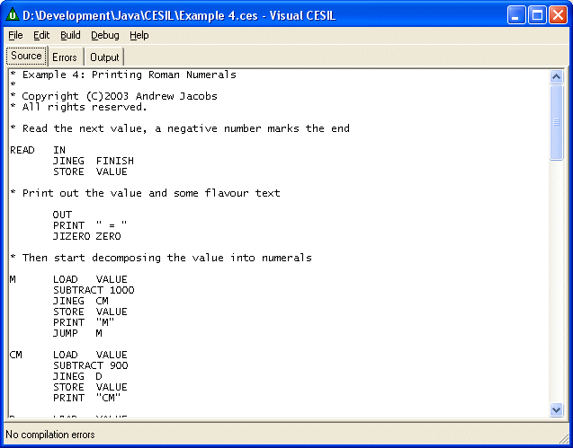

Way back in the mists of time (or at least the late 1960's) someone decided that it would be a good idea for young and impressionable 'O' level computer science students to have a really simple programming language to cut their teeth on. And so CESIL was created.
I seem to remember that CESIL stood for 'Computer Education in Schools Instructional Language' and that it was supported by ICL. It was a very simple assembly language supporting only integer operations and a little bit of string output. (Sounds fun eh? Don't worry you'll get your chance later.)
If programming in CESIL wasn't challenging enough the act of actually running it added to the overall excitement. At the time very few schools had a computer that could run the code written by the students and the few that could had a teletype (a kind of very slow mechanical typewriter) connected to remote mainframe. Those of us without a teletype had to either write out out programs neatly on coding sheets or use optical cards (and a special black felt tip) to lay out our master pieces. Either way the teacher had to post them away and if you were lucky the results had come back a week later. Inevitably the first time you sent cards or coding sheets the result would be a listing of all the compilation errors in your code, fix these and if you're really lucky the next listing might actually have some execution output in it and then you could start debugging!
A CESIL program consists of two parts, the instruction code followed by a runtime data set. The instruction code laid out like an assembly language program with each line consisting of up to three parts namely a label (for lines that will be subsequently referenced by jumps), an instruction and an operand (which depends on the type of instruction).
All memory, arithmetic and comparisons act on the current value of the integer accumulator. Named integer variables are used to store values when they are not being operated upon.
The start of the runtime data section is identified by a percent character ('%') and followed by lines containing a single integer value.
For example the following program totals the integers in runtime data section until it encounters a negative value and prints the total.
LOAD 0
LOOP STORE TOTAL
IN
JINEG DONE
ADD TOTAL
JUMP LOOP
DONE PRINT "The total is: "
LOAD TOTAL
OUT
LINE
HALT
%
1
2
3
-1
CESIL doesn't have very many instructions and the previous example used most of them. The following sections give a complete reference of all the instructions I can remember. (If I've missed any, or your memory is better than mine, then please let me know.)
In CESIL variables and labels are identified by alphanumeric symbols. The first character in an identifier must be a letter (e.g. 'a'-'z' or 'A'-'Z') but any subsequent characters may be either letters or digits. The compiler is not case sensitive, it converts all identifiers and keywords to upper case during processing.
Any CESIL instruction may the labeled to indicate that it may be the target of a branch instruction elsewhere in the program. Instructions that are not labeled should be preceded by at least one space or TAB character. It is common practice to layout CESIL programs so the labels, instructions and operands are in three columns by using TAB characters to space them.
Lines beginning with an asterisk are considered comments and are ignored my the compiler, as are blank lines.
LOAD literal
LOAD identifier
Put the value specified by the operand (either a literal value or a stored named value) into the accumulator.
STORE identifier
Copy the current value of the accumulator into the named storage location.
IN
Read the next value from the runtime data section into the accumulator.
Arithmetic operations apply a basic mathematical function to the integer value held in the accumulator.
ADD literal
ADD identifier
Adds the specified literal value or stored named value to the accumulator.
SUBTRACT literal
SUBTRACT identifier
Subtracts the specified literal value or stored named value from the accumulator.
MULTIPLY literal
MULTIPLY identifier
Multiplies the accumulator by the specified literal value or stored named value.
DIVIDE literal
DIVIDE identifier
Divides the accumulator by the specified literal value or stored named value. Dividing by zero will generate an error and halt execution.
JUMP label
Causes an unconditional jump to the named label.
JIZERO label
Jumps to the specified label if the current value of the accumulator is zero.
JINEG label
Jumps to the specified label if the current value of the accumulator is negative.
PRINT string
Prints the string (e.g. "Hello World") to the output stream. The cursor is left after the last character printed and does not move to a new line.
OUT
Prints the current value of the accumulator in a right justified field x characters wide. The cursor is left after the last character printed and does not move to a new line.
LINE
Moves the cursor to the start of a new line.
HALT
Causes the execution of the current program to stop.
OK, now its your chance to try this wonderful language for yourself. (Is that good news?) Visual CESIL was originally written as an exercise in Java programming (in Visual J++) but Microsoft dropped support for this environment so I've ported the code to C# and .Net 2.0.

To get started with Visual CESIL you will need one of the following zip files which contains the IDE packaged as a standalone Windows .EXE and a few examples. Versions 1.1 and 1.2 need the Microsoft Java JVM to operate and may not work on newly installed machines. I've also made a command line version of the compiler and runtime which should work on any Java platform.
Click on the item below to start a download:
Please let me know how you get on with it and send me copies of any interesting programs you come up with. I'll add the best submissions to future releases.
© Copyright 1999-2010 Andrew John Jacobs. All rights reserved.
All trademarks and service marks are the properties of their respective owners.